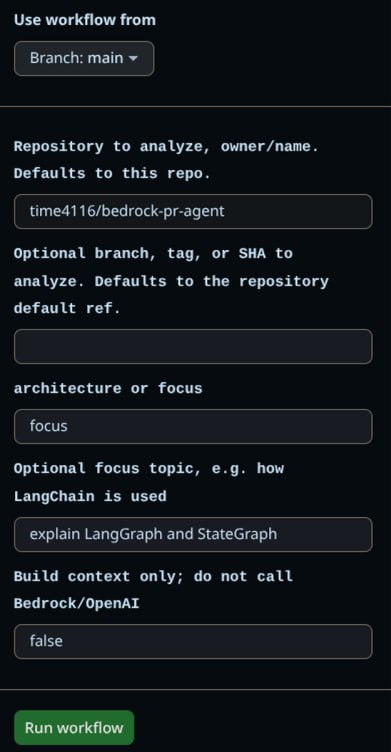

Repocaster working example
This sample was generated by Repocaster from the Bedrock PR Agent repository in focus mode. It demonstrates a codebase-specific audio briefing with a browser-native audio player.
- Target repo
- time4116/bedrock-pr-agent
- Mode
- focus
- Focus
- explain LangGraph and StateGraph
- Workflow run
- 26367720035 / repocaster
